Envoyer vos factures avec Brevo
Sans rien configurer, TAGO envoie vos documents par l'application de courriel de votre téléphone. Avec votre propre compte Brevo (gratuit), TAGO les envoie lui-même : il réessaie seul en cas de panne passagère et note l'envoi sur le document. Cette page montre chaque écran tel qu'il était le 25 octobre 2026. Brevo change parfois son interface : si un libellé a bougé, cherchez le mot le plus proche.
TAGO n'a pas de serveur : la clé reste sur votre téléphone, et l'envoi va directement de votre téléphone à Brevo (France, Union européenne). Brevo reçoit le PDF, le nom et le courriel du client ; voyez ce que ça implique pour la Loi 25.
1. Créer le compte Brevo
Allez sur brevo.com et inscrivez-vous, avec votre courriel ou avec S'inscrire avec Google. Brevo demande ensuite le nom et l'adresse de votre entreprise.
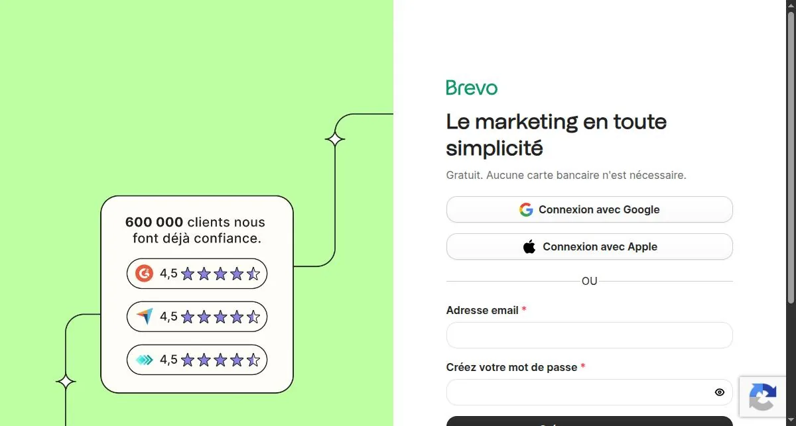
À l'étape du choix de l'offre, les offres payantes sont en haut. Le gratuit est tout en bas de la page : faites défiler jusqu'à Gratuit pour toujours, puis touchez Sélectionner Gratuit. Aucune carte n'est demandée, et le gratuit suffit pour envoyer des factures.
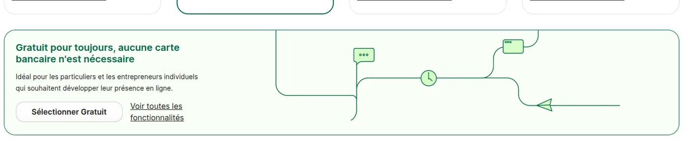
Brevo peut afficher un bandeau qui demande de vérifier votre téléphone avant les premiers envois. Suivez Vérifiez maintenant : un code arrive par texto.
Tous les réglages qui suivent sont sous la roue dentée, en haut à droite.
2. Avec votre propre domaine (recommandé)
Si votre adresse d'entreprise est sur un domaine à vous, comme info@monentreprise.ca, authentifiez ce domaine chez Brevo. C'est ce qui prouve aux boîtes de vos clients que Brevo a le droit d'envoyer en votre nom, et ce qui garde vos factures hors des indésirables. Vous n'avez pas de domaine ? Lisez la section 3 : un domaine coûte une quinzaine de dollars par année.
Ajouter le domaine
Roue dentée › Expéditeurs, domaine, IP, onglet Domaines, puis Ajouter un domaine.
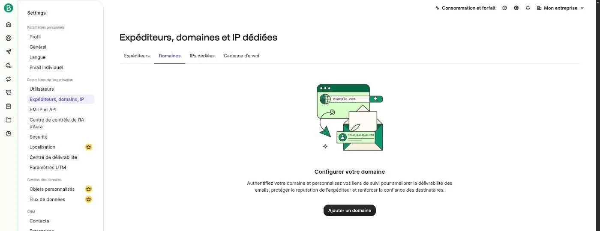
Tapez votre domaine seul, sans www. ni @, puis Continuer. L'étape Sous-domaine personnalisé qui suit est facultative : passez-la.
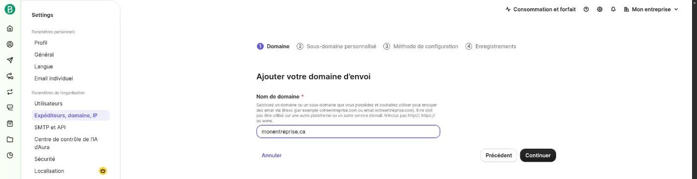
Choisir la méthode
Automatique (« Conseillé ») : Brevo se connecte chez le fournisseur où vous avez acheté le domaine et pose les réglages lui-même ; vous n'avez qu'à vous y connecter quand il le demande. Manuelle : Brevo affiche les valeurs et vous les copiez vous-même chez votre fournisseur. Déléguer envoie un lien à la personne qui gère votre domaine.
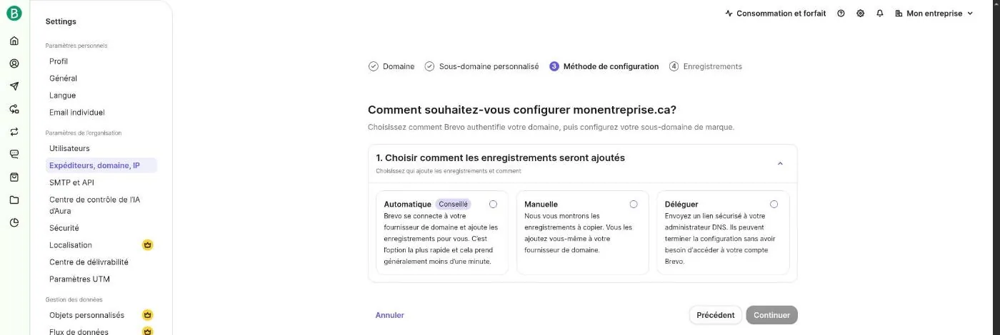
Les enregistrements, en manuel
En manuel, Brevo affiche quatre enregistrements DNS à créer chez votre fournisseur de domaine. Le bouton Copier à droite de chaque valeur évite les fautes de frappe.
- Code Brevo : TXT, nom
@, valeurbrevo-code:…(le vôtre est unique). Si votre fournisseur refuse@, laissez le nom vide. - DKIM 1 et DKIM 2 : CNAME, noms
brevo1._domainkeyetbrevo2._domainkey. - DMARC : TXT, nom
_dmarc, valeur qui commence parv=DMARC1;. Si votre domaine a déjà un DMARC, n'en créez pas un deuxième : gardez celui qui existe.
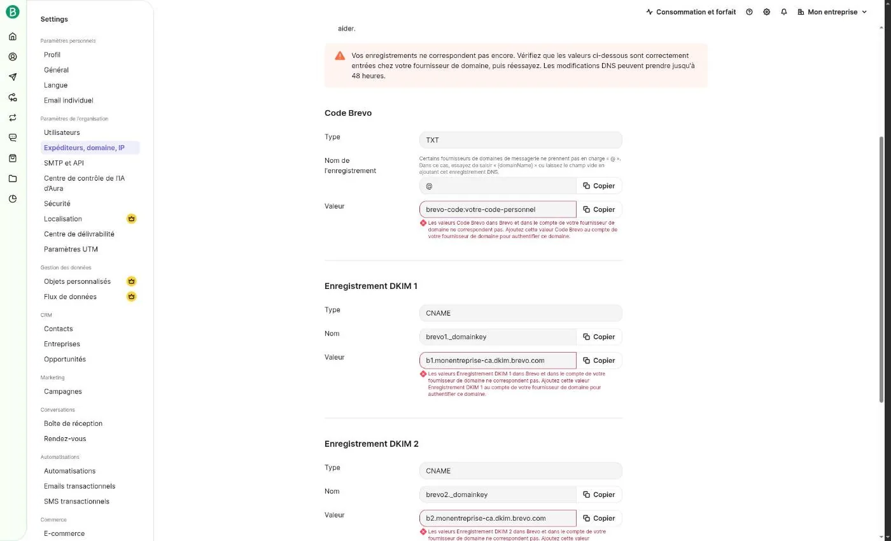
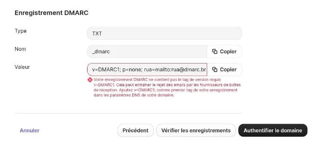
Une fois les enregistrements créés, touchez Vérifier les enregistrements, puis Authentifier le domaine. Un changement DNS prend souvent quelques minutes, parfois jusqu'à 48 heures : revenez plus tard dans l'onglet Domaines au besoin.
Ajouter votre adresse d'envoi
Onglet Expéditeurs › Ajouter un expéditeur. Le nom est ce que vos clients verront. L'adresse doit être exactement le courriel de votre profil d'entreprise dans TAGO. Prenez une adresse qui reçoit les réponses (info@), pas un noreply@ : c'est elle qui s'imprime sur la facture.
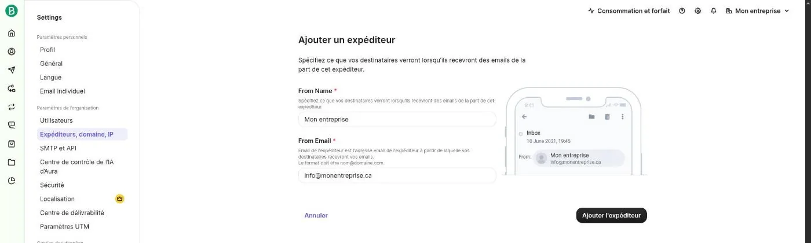
3. Sans domaine : ça marche, avec des limites
Avec une adresse Gmail, Outlook ou Yahoo, il n'y a rien à authentifier : à l'inscription, Brevo crée déjà un expéditeur Vérifié avec l'adresse de votre compte. Il affiche aussi « Le domaine Freemail n'est pas recommandé ».
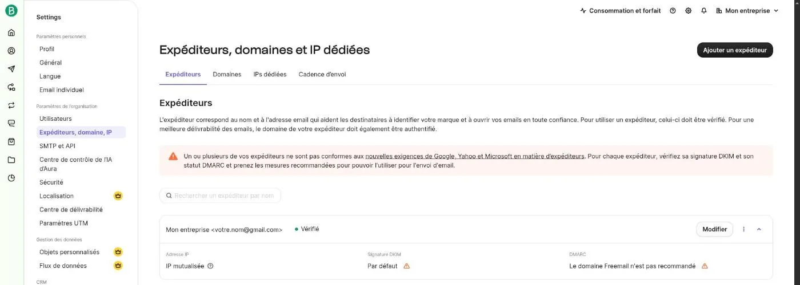
Ce qui se passe à l'envoi, constaté avec TAGO le 25 octobre 2026 :
- Brevo remplace l'adresse d'envoi : votre client voit le courriel venir de
votre.nom@123456.brevosend.com, pas de votre Gmail. Brevo le fait pour toute adresse gratuite, à cause des règles de Gmail, Yahoo et Microsoft. - Quand votre client touche Répondre, la réponse va bien à votre adresse Gmail.
- Une adresse inconnue peut rendre un client méfiant, et Brevo prévient que ces envois risquent davantage les indésirables.
Sans domaine, le bouton Envoyer par courriel de TAGO reste souvent le meilleur choix : il passe par votre propre application de courriel, donc le client voit votre vraie adresse. Vous perdez seulement l'envoi automatique et les nouveaux essais.
4. Générer la clé API
Roue dentée › SMTP et API. La page s'ouvre sur l'onglet SMTP : passez à l'onglet Clés API et MCP, car une clé SMTP ne fonctionne pas dans TAGO. Touchez ensuite Générer une clé API.
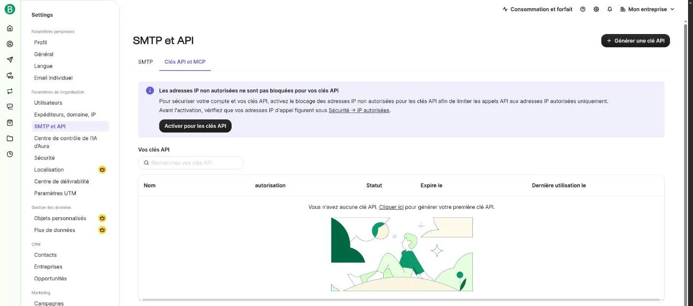
- Nom de la clé :
TAGO, pour la reconnaître plus tard. - Expiration : 1 an par défaut ; Pas d'expiration est offert. Dans tous les cas, Brevo désactive une clé restée 90 jours sans servir. Il faudra alors en générer une nouvelle et la recoller dans TAGO.
- Accès : Restreint, puis Emails transactionnels : Tous. Le reste peut rester à Aucune : TAGO n'a besoin de rien d'autre.
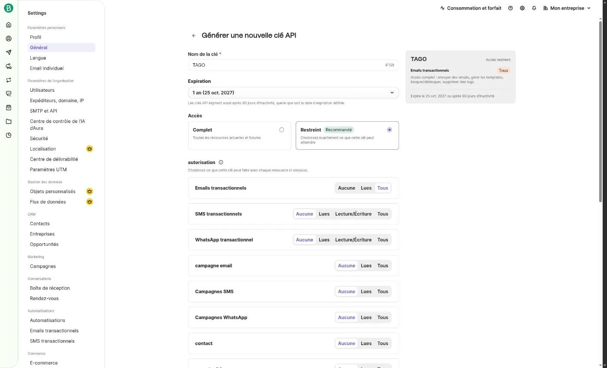
Touchez Générer. La clé ne s'affiche qu'une fois : copiez-la tout de suite et collez-la dans TAGO. Ne l'envoyez à personne et ne la gardez pas dans une note : elle permet d'envoyer des courriels en votre nom. Une clé perdue ne se récupère pas : supprimez-la dans Brevo et générez-en une autre.
5. Dans TAGO
- Dans le profil de votre entreprise, le courriel doit être l'adresse de l'expéditeur Brevo :
info@monentreprise.caavec un domaine, ou votre Gmail sans domaine. - Ouvrez ⋮ › Factures et PDF. Sous Envoi direct (Brevo — optionnel), choisissez Brevo, collez la clé dans Nouvelle clé API, puis touchez Enregistrer la clé. Elle est gardée chiffrée sur le téléphone, jamais dans les sauvegardes.
- Sur un document, Envoyer directement (Brevo) s'ajoute aux actions, dans Plus d'actions (le ⋮ en bas à gauche). Faites un premier essai vers votre propre adresse.
Une fois l'envoi fait, la fiche du document le note dans Historique d'envoi, avec l'adresse du destinataire.
6. Si ça ne marche pas
« Brevo refuse la clé API »
La clé est mal copiée, supprimée ou expirée : après sa date d'expiration, ou après 90 jours sans envoi. Vérifiez qu'elle vient bien de l'onglet Clés API et MCP et pas de l'onglet SMTP, puis générez-en une nouvelle au besoin.
« … n'est pas un expéditeur vérifié dans Brevo »
Le courriel du profil d'entreprise dans TAGO ne correspond à aucun expéditeur vérifié ni à aucun domaine authentifié chez Brevo. Comparez les deux lettre par lettre. Avec un domaine, attendez que l'onglet Domaines le montre authentifié.
L'envoi a réussi, mais le client n'a rien reçu
Brevo a accepté le courriel, mais la boîte du client l'a probablement classé dans les indésirables. Demandez-lui de regarder ce dossier. Si ça se répète, c'est presque toujours une question de domaine : voyez la section 2.
« Brevo refuse l'envoi depuis ce compte »
Brevo bloque le compte lui-même. Un compte neuf doit parfois vérifier son numéro de téléphone avant ses premiers envois : cherchez le bandeau en haut du tableau de bord de Brevo. Si vous avez activé le blocage des adresses IP non autorisées pour les clés API (Sécurité), désactivez-le : l'adresse IP d'un téléphone change sans arrêt.
Une autre question : travailleurautonomego@gmail.com. Retour au guide.